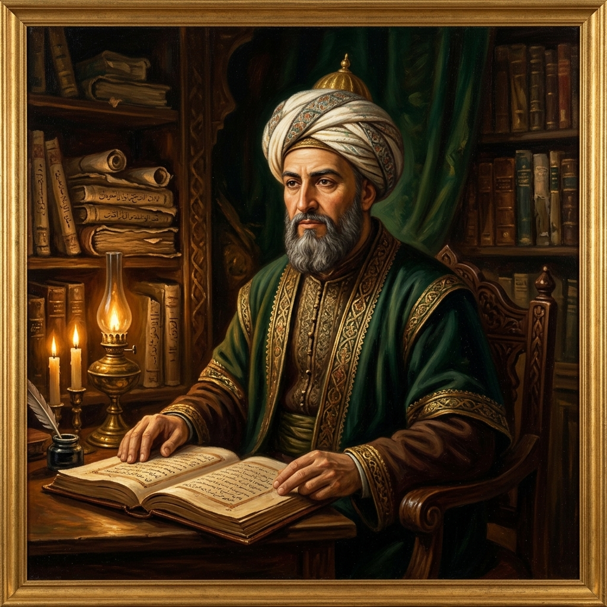

أبو حامد الغزالي
حجة الإسلام (1058 - 1111)
فيلسوف ومتكلم ومتصوف صاحب «المنقذ من الضلال» و«إحياء علوم الدين»، بحث في نقد المعرفة والشك اليقيني.
أبرز المؤلفات:
- • المنقذ من الضلال ⏳ المصدر قادم
- • إحياء علوم الدين ⏳ المصدر قادم